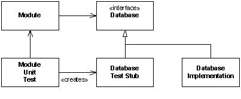

Tópicos
TDD é a prática de escrever testes de unidade e código de produção concorrentemente e com alto nível de detalhe. Um par
de programadores escreve primeiro uma pequena parte de um teste de unidade e, em seguida, escrevem código de produção
suficiente apenas para fazer este teste de unidade compilar e executar. Então eles escrevem um pouco mais do teste e
acrescentam código de produção suficiente para fazer com que esse novo teste compile e execute com sucesso. Este ciclo
pode durar de 30 segundos a cinco minutos. Raramente alcança dez minutos. Em cada ciclo, os testes vêm em primeiro
lugar. Uma vez que um teste de unidade esteja pronto, eles constroem outro até que todos os testes da tarefa em que
estão trabalhando estejam prontos.
Segue um exemplo simples de desenvolvimento dirigido por testes. O programa que estamos escrevendo é um formatador de
texto que pode obter strings arbitrárias e centralizá-las horizontalmente em uma página. A primeira coluna mostra os
testes, e a segunda coluna mostra o código de produção. O teste é sempre escrito e compilado primeiro. Se a compilação
falhar, então será acrescentado código de produção para compilar com êxito. Então o teste é executado para ver se
passa. Se o teste falhar, então código de produção é acrescentado para fazer o teste passar. Se o teste passar, então
um novo teste é acrescentado.
|
Primeiro escrevemos o teste
|
Então escrevemos o código de produção
|
|
|
|
|
|
|
|
|
|
|
|
|
|
|
|
-
Cobertura de Teste. Se você seguir as regras do TDD, então praticamente 100% das linhas de código de
produção em seu programa estarão cobertos por testes de unidade. Isto não cobre 100% dos caminhos no código, mas
certifica que praticamente todas as linhas são executadas e testadas.
-
Repetitividade dos Testes. Os testes podem ser executados a qualquer hora que você quiser. Isto é
especialmente útil após você ter feito alterações no código de produção. Você pode executar os testes para
certificar-se que o código existente não parou de funcionar. Visto que os testes lhe dão segurança você pode ter
coragem de fazer alterações que de outra forma seriam muito arriscadas de fazer.
-
Documentação. Os testes descrever o seu entendimento de como o código deve se comportar. Eles também
descrevem a API. Por isso, os testes são uma forma de documentação. Os testes de unidade são normalmente muito
simples e, portanto, são fáceis de entender. Além disso, são inequívocos e executáveis. Finalmente, se os testes
forem executados todas às vezes que qualquer alteração no código for feita, eles nunca ficarão obsoletos.
-
Design da API. Quando você escreve os testes primeiro, você se coloca na posição de um usuário da API de seu
programa. Isso só pode lhe ajudar a executar um melhor design da API. Sua primeira preocupação, ao escrever os
testes, é tornar mais fácil e conveniente o uso dessa API.
-
Design do Sistema. Um módulo que é independentemente testável é um módulo que está desacoplado do resto do
sistema. Quando você escrever os testes primeiro, você automaticamente desacopla os módulos que você está testando.
Isso tem um profundo efeito positivo na qualidade geral do design do sistema.
-
Depuração Reduzida. Quando você se move de acordo com os minúsculos passos recomendados pelo TDD, quase
nunca é necessário usar o depurador. O tempo de depuração é reduzido extremamente.
-
O seu código acabou de funcionar! se você observar uma equipe de desenvolvedores que estão praticando TDD,
você perceberá que cada par de desenvolvedores teve seu código funcionando a um minuto atrás. Não importando quando
você faz a observação! A um minuto ou mais atrás, cada par executou seu código, e ele passou em todos os testes.
Sendo assim, você nunca estará muito longe de fazer o sistema funcionar.
-
A programação em pequenos ciclos pode parecer ineficaz. Os programadores muitas vezes acham frustrante trabalhar em
incrementos tão pequenos que lhes permitam saber o resultado do teste. Às vezes parece que não vale a pena dar um
passo tão pequeno.
-
Muito código de teste é produzido. Não é raro que o total de código de teste exceda em muito o total de código de
produção. Este código tem que ser mantido a um custo significativo.
-
Bastante tempo é gasto mantendo os testes sincronizados com o código de produção. Os programadores, por vezes acham
que o tempo gasto para manter os testes funcionando e bem estruturados é um tempo que não está sendo gasto com os
desejos do cliente.
-
Isolamento. Ao escrever um teste de unidade para um módulo, considere se você deseja que o módulo invoque
outros módulos. Se não desejar, então isole o módulo com interfaces. Por exemplo, suponha que você está testando um
módulo que interage com o banco de dados. O teste não tem nada a ver com o banco de dados; ele simplesmente testa a
forma que o módulo manipula o banco de dados. Então você isola o módulo, do banco de dados, criando uma interface
que represente o banco de dados para que o módulo use. Então, para os propósitos do teste, você implementa a
interface com um stub de teste. Este tipo de isolamento diminui consideravelmente a quantidade de acoplamento, em
todo o sistema.

Isto está de acordo com o princípio de simplicidade. Se testThreeSquared fosse o único
caso de teste que importasse então esta implementação estaria correta. É claro que sabemos que está incorreta, mas na
sua forma atual ele verifica que o caso de teste realmente passa quando se espera. Agora suponha que acrescentemos um
novo caso de teste:
Poderíamos fazê-lo passar, alterando a função square da seguinte forma:
Mesmo passando no teste, ela viola a regra de tornar o código mais geral. Para tornar o código mais geral, temos que
retornar a raiz do argumento.
Esta solução passa em todos os testes, é simples, e aumenta a generalidade da solução.
Agora vamos dizer que queremos calcular o pagamento de horas extras. Qualquer hora após as oito é cobrada uma hora e
meia. A primeira coisa que fazemos é adicionar o novo caso de teste falho:
Então fazemos o caso de teste passar, alterando o código de produção.
Evite acrescentar qualquer if, while, for, do ou qualquer outro tipo de condicional sem
um caso de teste falhar. Lembre-se de acrescentar casos de teste para cada condição limítrofe.
-
Teste Tudo Que Possa Falhar. Do mesmo modo, não se preocupe em testar coisas que não podem falhar. Por
exemplo, normalmente é infrutífero testar accessors e mutators simples.
Acessors e mutators normalmente não podem falhar. Por isso não há razão para testá-los. Um julgamento claro tem
que ser aplicado para usar esta regra. Você será tentado a evitar um teste de unidade necessário, alegando que
o código não pode falhar. Você saberá que caiu neste hábito quando começar a encontrar erros nos métodos que
você pensava que não podiam falhar.
-
Mantenha os Dados Dos Testes no Código. Às vezes é tentador colocar dados de teste em um arquivo,
especialmente quando a entrada de um módulo é um arquivo. Entretanto, o melhor lugar para os dados do teste é no
próprio código do teste de unidade. Por exemplo, suponha que temos uma função que conte a quantidade de caracteres
em um arquivo. A assinatura desta função é:
Para manter os dados de teste no código do teste de unidade, o teste deve ser escrito desta forma:
Isto mantém todos os dados relevantes para o teste em um só lugar.
-
Remoção de Testes. Algumas vezes você vai escrever testes que são úteis por um tempo, mas tornam-se
redundantes à medida que outros testes assumam o seu papel. Não tenha medo de remover antigos testes redundantes.
Mantenha a suíte de testes o menor possível sem comprometer a cobertura.
-
Mantenha a Duração do Teste Curta. A eficácia dos testes depende da conveniência. A eficácia dos testes
depende da conveniência. Sendo assim, é muito importante manter a duração dos testes bem curta. Em um sistema
grande, isto significa decompor os testes.
Ao trabalhar em um módulo em particular, você vai querer escolher os testes que sejam relevantes para esse módulo e
os módulos circundantes. Mantenha a duração do teste bem abaixo de um minuto. Dez segundos é frequentemente muito
tempo.
Ao fazer check-in, de um módulo, execute uma suíte que teste todo o sistema, mas que não dure mais do que 10
minutos para ser executada. Isto pode significar que você terá que extrair alguns dos testes mais demorados.
Execute a totalidade dos testes no sistema, todas as noites. Mantenha o tempo de execução suficientemente pequeno
para que eles possam ser executados mais de uma vez antes do amanhecer, para os casos onde haja problemas que
obriguem outra execução.
O truque para escrever testes de unidade para GUIs é a separação e o desacoplamento. Separe o código da GUI em três
camadas, normalmente chamadas Modelo, Visão e Apresentador:
-
O Modelo interpreta as regras de negócio dos itens que serão exibidos na tela. Todas as políticas relevantes
relacionadas ao negócio são implementadas neste módulo. Por isso, este módulo é fácil de testar somente com base em
suas entradas e saídas.
-
O Apresentador entende como os dados serão apresentados e como o usuário irá interagir com estes dados. Ele
sabe que existem botões, caixas de verificação, campos de texto, etc. Ele sabe que às vezes os botões precisam ser
desativados (esmaecidos) e os campos de texto não editáveis. Ele sabe, em um nível mecânico, como os dados são
exibidos e como as interações ocorrem. Entretanto, ele não sabe nada sobre a real API da GUI. Por exemplo, se você
estiver escrevendo uma GUI Java Swing, o Apresentador não usará nenhuma das classes swing. Ao invés, ele envia
mensagens para a Visão cuidar da real exibição e interação. Sendo assim, o Apresentador pode ser testado,
novamente, somente com base em suas entradas vindas do Modelo e suas saídas para a Visão.
-
A Visão compreende a API da GUI. Ela não toma decisões de validação, seleção ou políticas. Ela tem
praticamente inteligência zero. Ela simplesmente une a interface usada pelo Apresentador à API da GUI. Ela pode ser
testada pela verificação das conexões. Os testes percorrem as estruturas de dados da GUI, certificando-se que os
botões, campos de texto e caixas de verificação apropriados foram criados. Os testes enviam eventos para os widgets
da GUI e certificam que as chamadas adequadas foram invocadas.
Alguns softwares são escritos para controlar o hardware. Você pode testar estes softwares escrevendo um simulador de
hardware. Os testes definem vários estados no simulador de hardware e então conduzem o sistema para manipular o
hardware. Finalmente, os testes consultam a simulação para assegurar que o hardware foi conduzido ao estado final
correto.
Alguns softwares são re-entrantes ou concorrentes. Condições de concorrência podem tornar o comportamento do software
indeterminístico. Existem algumas falhas que podem ser tanto severas quanto fortemente dependentes de temporização e
ordem dos eventos. Softwares que funcionam 99,999% do tempo, podem falhar em 0,001% devido a problemas de concorrência.
Encontrar estes problemas é um desafio.
Normalmente testes Monte Carlo exaustivos são usados para tentar direcionar o sistema através da maioria dos estados
possíveis.
Quando os problemas de concorrência são descobertos, os testes podem ser escritos de forma que direcionem o sistema
para o estado de falha e, depois, comprove a falha. Então, o problema pode ser reparado e o teste continuar na suíte de
testes como um teste de regressão.
Quase sempre a melhor forma de fazer isso é criar uma interface que represente a base de dados. Cada caso de teste pode
implementar essa interface e fingir ser a base de dados, fornecendo os seus próprios dados e interpretando as chamadas
feitas pelo módulo em teste. Isso evita que os dados de teste sejam realmente escritos e lidos na base de dados. Isto
também permite que o código de teste force condições de falha que de outra forma seriam difíceis de simular.
Veja: http://c2.com/cgi/wiki?MockObject
Os servlets são simplesmente tubos através dos quais os dados do formulário passam para um programa e o HTML retorna. O
truque para testar um servlet é separar o programa do tubo. Mantenha o código do servlet o menor possível. Coloque o
seu programa nas velhas classes planas que não derivem de Servlets. Então você poderá testar estas velhas classes
planas como de costume. Se o próprio servlet for bem pequeno, pode ser tão simples que não necessite de testes.
Certamente, você também poderá criar o seu próprio invocador de servlets ou usar uma versão de código aberto. Esses
programas agem como servidores web e disparam os servlets para você. Você passa os dados do formulário para eles e eles
retornam o HTML para você.
Veja:
http://c2.com/cgi/wiki?JunitServlet
http://c2.com/cgi/wiki?ServletTesting
http://strutstestcase.sourceforge.net/
Um documento HTML é quase um documento XML. Existe uma ferramenta que permite que você pesquise um documento HTML como
se fosse um documento XML. Esta ferramenta é chamada de HTTPUnit. Usando esta ferramenta, você poderá escrever testes
que inspecionem o conteúdo de um documento HTML sem se preocupar com espaços em branco ou questões de formatação. Outra
ferramenta chamada HTMLUnit também faz algo semelhante. A HTMLUnit inclui suporte para testar páginas HTML com
JavaScript embutido.
Veja:
http://httpunit.sourceforge.net/
http://htmlunit.sourceforge.net/
|